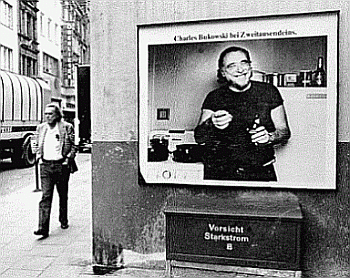

A coletânea de contos de Charles Bukowski,
no livro “Notas de um Velho Safado”,
enrubesce por cuspir na cara do leitor uma
série de conceitos tidos como corretos,
e que na voz desse escritor maldito, tornam-se
questionáveis e lacerantes. Baldes
e baldes de realidade numa tela nada limpa
e que aparenta custar muito menos do que a
real fortuna que vale.
Hank, como costuma ser chamado pelos amigos,
relata momentos de depravações
e obscenidades que precedem a sua fama literária,
e tece questionamentos políticos e
sociais, que não nos permite continuar
de olhos fechados frente às pequenas
hipocrisias do dia-a-dia.
Alcoólatra, trabalhando em sub-empregos,
passando por situações de fome
e miséria, vivendo relacionamentos
sórdidos com mulheres peculiares (porém
não especiais), ora dentro do quarto
sozinho e quase morto, ora em meio a bares
sujos, convivendo com outros bêbados,
outros loucos e outros gênios, tornando-se
impossível saber ao certo qual é
a diferença entre eles. É quase
palpável a atmosfera de insanidade,
o gosto de vinho barato e a sensação
de imundície de seu universo.
Notas de um Velho Safado é indicado
a leitores que têm a coragem de encarar
a realidade, que aceitam a tortura de uma
boa insinuação e que sabem que
há um mar de pessoas que correm por
baixo dos esgotos das cidades... sendo que
uma delas por ser você!
E passando a palavra ao bom e velho Hank,
“poderíamos seguir adiante, mas
seríamos acusados de sermos amargos
e dementes, mas é o mundo que faz de
todos nós loucos e loucas, e até
mesmo os santos estão dementes, nada
está a salvo. (...) E se tenho algum
conselho a dar a alguém é esse:
aprenda a pintar com aquarela”.
Ficha Técnica
Charles Bukowski nasceu em 1920, em Andernach,
Alemanha. Publicou seu primeiro conto aos
24 anos, primeiro poema aos 35, e morou por
50 anos em Los Angeles. Considerado um pervertido
pela moral e bons costumes e um gênio
pela literatura, Bukowski é cultuado
entre o público alternativo e amantes
da literatura maldita. Morreu em San Pedro,
Califórnia, em 1994, pouco depois de
terminar seu último romance: “Pulp”
(1994). Um dos mais famosos romances é
“Mulheres” (1978) e “Hollywood”
(1989). No Brasil os últimos livros
publicados são “Hino da tormenta”
(2003) e “Tempo de vôo para lugar
algum” (2004) que correspondem à
primeira e à segunda parte do livro
“Open All Night: New Poems”